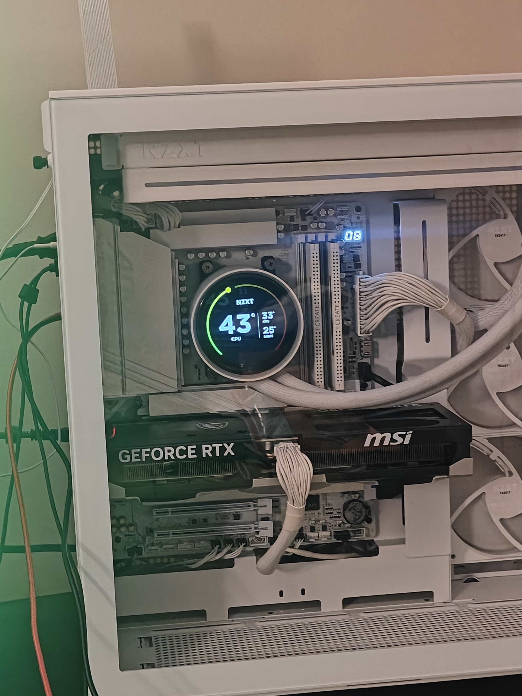

My Journey
I am a third-year computer science undergrad at the University of Cincinnati. This page is the story of how I went from “I really want a PC” to actually building one, what I picked, and why I tried to plan it as a long-term workstation—not just a box for one semester.

How it looks today—side panel on, everything fired up. The Kraken screen shows live temps; the build stayed with the white / silver “ICE” theme end to end.
How it actually started
I had wanted to build a PC for the longest time, but life kept moving and I never pulled the trigger. What kicked things into gear was meeting a housemate who was subleasing at our place—he had a desktop, and seeing a real build in person made the whole thing feel less like a fantasy and more like something I could actually do. If you are reading this and you are the friend who answers random hardware questions at 11 p.m., thank you. You know who you are.
My first budget was something in the ballpark of around $400. Yeah. That did not survive contact with reality. I am not going to post my final number here (we all have limits on how public we want our bank account decisions to be), but I will say honestly: I went well past that original idea. The build turned into an investment I plan to keep using for years—coursework, side projects, gaming, and random experiments—so I stopped treating it like “the cheapest possible PC” and more like “the machine I do not want to outgrow in two summers.”
What I wanted this PC to do
I did not want a PC that was only for games, and I did not want something that could only browse the web. As a CS student, I knew I would be juggling IDEs, maybe virtual machines or containers, compile-heavy projects, lots of browser tabs, and still wanting to actually enjoy gaming when I had time. So the goal was simple to say and hard to shop for: something strong for CPU-heavy work, fast storage and memory for everyday dev life, and a GPU that could keep up with modern games and useful graphics stuff when a class or side project calls for it.
The long planning phase
I spent roughly six to eight months reading, changing my mind, staring at PCPartPicker, and slowly tightening the list. That sounds like a long time, but for me it was actually helpful—spread out the cost mentally, and I stopped impulse-buying parts that did not match the rest of the build. If you are a student doing the same thing: the wait is annoying, but it beats buying the wrong motherboard and realizing it a week later.
What I ended up buying (and why it is built to last)
When the list finally locked in, these were the parts. I will explain why each choice made sense to me—not as a review site, but as someone who wanted performance now and room to grow later.
Here is the build at a glance—same components I shopped for over those months:
- PSU: NZXT C850
- Motherboard: Gigabyte X870 AORUS Elite WiFi 7 ICE
- CPU: AMD Ryzen 9 9950X
- GPU (first): NVIDIA GeForce RTX 4070 Ti Super → later upgraded to RTX 5070 Ti
- RAM: TEAMGROUP T-Create 32 GB DDR5 — 6000 MT/s, CL32
- CPU cooler: NZXT Kraken Elite 360
- Case: NZXT H9 Flow
- SSD: WD Black SN850X
CPU — AMD Ryzen 9 9950X

The 9950X in hand right before it went into the socket—definitely a “do not drop this” moment.
This is a top-tier Zen 5 chip with a ton of cores and threads. For a CS workload, that matters: faster builds and compiles, smoother multitasking when you have an IDE, Docker, Spotify, and half the internet open, and headroom if I get into heavier stuff later. I did not want to pick a CPU I would side-eye in year three. This one is the kind of investment you feel when a project actually finishes compiling instead of eating your whole evening.
Motherboard — Gigabyte X870 AORUS Elite WiFi 7 ICE

Fresh out of the box—socket cover still on, VRM heatsinks and M.2 armor all in the white / silver ICE look.
Modern AM5 platform with features I actually use: solid power delivery for a strong CPU, Wi-Fi 7 for dorms or apartments where ethernet is not always perfect, and enough I/O for storage and peripherals. A good board is easy to overlook, but it is the piece everything else plugs into— I wanted something that would not feel outdated the first time I added a drive or accessory.
Power supply — NZXT C850
850W gives comfortable headroom for a high-end CPU and GPU, including power spikes when both wake up at once. PSUs are something I did not want to “just barely” pass on—this one is part of keeping the whole system stable for the long haul. NZXT also matched the rest of my case and cooling ecosystem, which made cable management and software feel a little more in one place.
Graphics — NVIDIA GeForce RTX 4070 Ti Super (at first)
I started with a 4070 Ti Super—plenty of muscle for high settings in modern games and more than enough for student projects that touch CUDA, graphics, or GPU-accelerated tools. I will talk about the upgrade in a minute, but this card was already a “use it for years” kind of pick.
Memory — TEAMGROUP T-Create, 32 GB DDR5

Both T-Create sticks clicked in—dual-channel, matching the rest of the white build.
I went with 32 GB of DDR5 at 6000 MT/s, with CAS latency 32 (the “CL32” you see on the box). That is a strong balance for gaming and real work: IDEs, local servers, VMs, and leaving room for whatever class project throws at you. 16 GB can work for light use; I did not want to sit there closing apps like it is 2015. 32 GB is the sweet spot I expect to still be comfortable on for a long time.
Cooling — NZXT Kraken Elite 360
A high-end CPU deserves real cooling. A 360mm AIO keeps thermals under control when I am doing long compile jobs or stress tests, and quieter operation day to day. Heat is not just a comfort thing— parts that run cooler tend to live happier lives over the years.
Case — NZXT H9 Flow
The H9 Flow is built around airflow and room to build in. I wanted a case I could work inside without losing my mind, with space for the radiator and clean cable routing. It also happens to look sharp on a desk—nice when your PC is both a tool and something you actually look at every day.
Storage — WD Black SN850X
A fast NVMe SSD is one of the easiest quality-of-life upgrades you can feel every day: boot times, loading big projects, games, and juggling files without the machine feeling sluggish. The SN850X is the kind of drive I trust to still feel quick a few years from now.

Mid-build: H9 Flow with the glass off—dual-chamber layout, white cables, and the big GPU in place before the panels went back on.
Then NVIDIA dropped the 50-series
About two months after everything was built and working, NVIDIA launched the new line— including the GeForce RTX 5070 Ti. After doing the math on selling my 4070 Ti Super and what the upgrade would cost, I decided to make the jump. I sold the 4070 Ti Super and bought a 5070 Ti instead.
I am not here to write a benchmark article, but the idea was straightforward: stay on a current generation GPU for the next chunk of my degree and beyond, with better efficiency and features for the games and projects I will run over the next several years. For a machine I plan to keep as my main workstation, that mattered more to me than squeezing every dollar on day one.
Why this whole setup still makes sense to me
Put it together and you get: a very strong CPU for dev and productivity, fast memory and storage so the machine never feels like the bottleneck during normal student life, a quality PSU and cooling so the system is stable and not cooking itself, a spacious airflow case, and a modern GPU on the latest architecture I was willing to pay for. That is the kind of PC I can imagine still using after graduation for work, side projects, and games—without feeling like I cut a corner I will regret.
If you are building on a smaller budget, that is completely valid. My path is not the only path. I just want to be honest that I aimed for long-horizon use as a CS student, not the cheapest build on the spreadsheet—and I am really happy I finally made it happen.